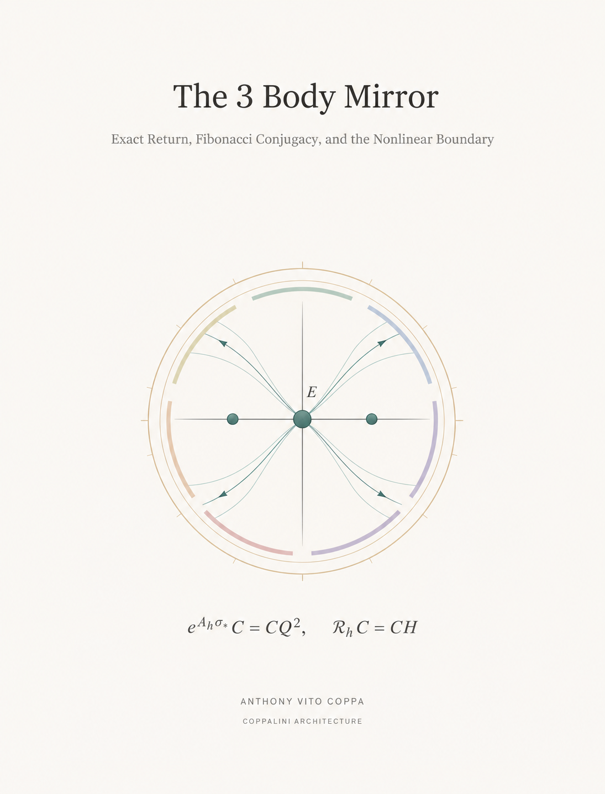
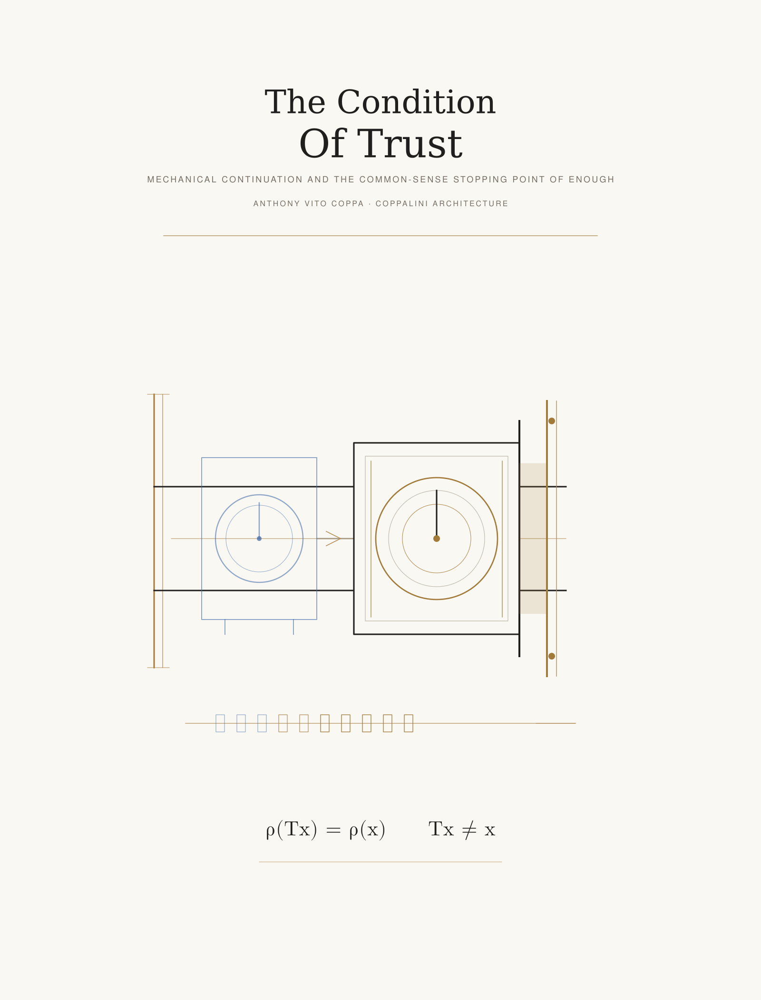

Computational Gauge Invariance
One exact metric root.
Discrete receipts. Continuous fields.
A public research library: each released result carries its source, executable check or proof, and stated boundary.
- C++20consteval · constexpr · static_assert
- Lean 4by decide · finite proofs
- Python 3int · Fraction · isolated runners
- SymPyRational · simplify · exact forms
- Node.jsassert/strict · failure witnesses
- GitHub ActionsSHA-256 · archive integrity
Gravity Light · Memory Motion · Time Scope · Horizon Silence
One algebraic identity Four physical constructions
G = [Q, Ω]. Four short constructions of Einstein’s metric interval, lifted return, quantum projective phase, and thermodynamic potential closure.
Gravity–Light. On every chosen Lorentzian two-plane (Px, gx), ALorTη1,1ALor = G = [Q, Ω] is an exact normal form of Einstein’s metric interval ds² = gμνdxμdxν, and zTGz = 0 gives its two local null light directions. GL.0, GL.10–GL.11b
Memory–Motion. Time-addressed transport obeys Ta←bTb←a = I; ξlift advances by 2 log φ while qax returns. MM.0b, MM.5–MM.8
Time–Scope. Linear electromagnetic polarization and a Pauli two-level state realize the same projective double cover: Uπz = −z while Scope(Uπz) = Scope(z). TS.5, TS.20–TS.22
Horizon–Silence. A viable thermodynamic trajectory obeys dUth = TthdSth − p dV + ⋯ and diSth ≥ 0; hijk = 0 exactly reconstructs dij = sj − si across the eight-address field. HS.3–HS.4, HS.22–HS.23
Open a cover for its equation-tethered result, source, and Zenodo record.
Record: Zenodo 10.5281/zenodo.24073596 · four paper records · verifier · receipt · claim register
One exact root / four physical laws
Q² = Q + I · C = −Ω · C² = −I · G = [Q, Ω] · G² = 5I · H = G/√5 · S = (2Q − I)/√5 · LₛᵀGLₛ = G · HLₛH = L₋ₛ
M₀ = {Gravity–Light, Memory–Motion, Time–Scope, Horizon–Silence} inside E(K₈) = ⨆r∈ℤ₇Mr. common.tex · GL.1–GL.4 · MM.5–MM.8 · TS.2 · HS.26–HS.29
Latest build / Clear Onyx — Gauge & Matter Laboratory v0.5.3
Gauge & Matter Laboratory
A finite reader for gauge and matter carriers. Brightness, hue, filaments, and the compass make each declared model immediately legible.
It begins moving as the page loads. Brightness reads local magnitude, hue reads declared phase, filaments read transport, and the compass names a three-coordinate model read.
Electroweak Higgs doublet, U(1) flux transport, SU(3) colour-link transport, and admitted matter carriers share one inspectable field reader with executable receipts.
Formal lineage / original deck
A lineage of operations
Twenty-four cited constructions. Each card preserves its author, statement, figure, governing equation, conditions, and source address.
Open a card for its construction, stated conditions, source record, and original geometric plate.
Deck source: lineage-data.json · integrity receipt · reference ledger
Exact Reader · sources and receipts
Read every claim at its stated resolution.
Each result retains its source edition, jurisdiction, assumptions, procedure, receipt, and evidence status. The Exact Reader presents declared results beside their checks. The source registers retain the current paper set, released audit packages, and historical claim snapshots.
Jurisdiction → Reference → Input → Procedure → Result → Receipt → Boundary

Projective memory · Working edition 0.2
Infinity One Zero Lift
The Normal Form of Projective Memory
A visible form can return while its occurrence advances. This paper gives the exact normal form: a four-phase lift, eight distinct occurrence addresses, all 28 pairwise comparisons, and an explicit inverse that reconstructs the state from its retained reference, agreement, and signed differences.
(p, c, a, D) ↦ (4c + p, a m + Dᵀm)

Mathematical physics
The 3 Body Mirror
Exact Return, Fibonacci Conjugacy, and the Nonlinear Boundary
A moving observer can recover the three-body relative configuration from complete relative vectors and known masses. For the equal-mass Euler orbit, Newtonian reflection and time reversal provide an exact nonlinear inverse; a selected hyperbolic sector admits the stated Fibonacci conjugacy.
On the stable/unstable cross the local analytic conjugacy holds. The independently checked nonzero fourth-order coefficient establishes the formal and smooth linearization boundary. The sampling interval is chosen; measured Sun–Earth–Moon and biological identifications remain open.
eAhσ* C = C Q² ℛh C = C H

Formal reader
The Condition Of Trust
A finite theorem of reader fidelity and sufficient stopping.
For declared states, readings, decisions, and receipts, the paper checks when equal reads require equal decisions, when a receipt can recover its promised history, and when a sufficient work prefix can end. The source, verifier, successful finite receipt, and build receipt remain together.
The complete paper library, plates, source records, and formal lineage appear in the Library.